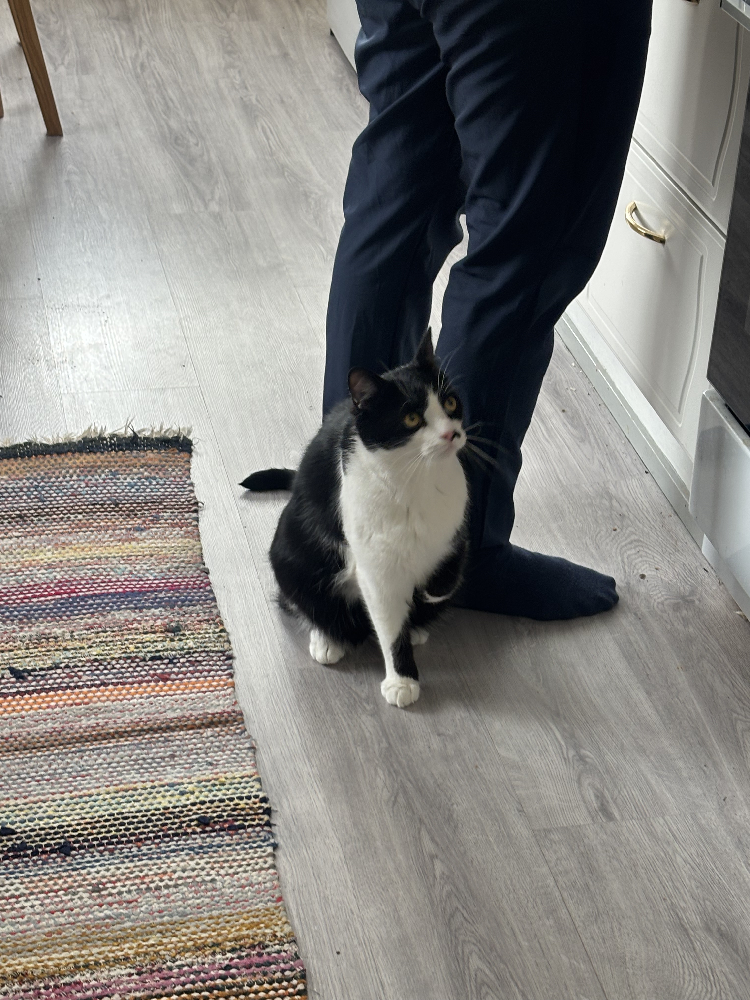
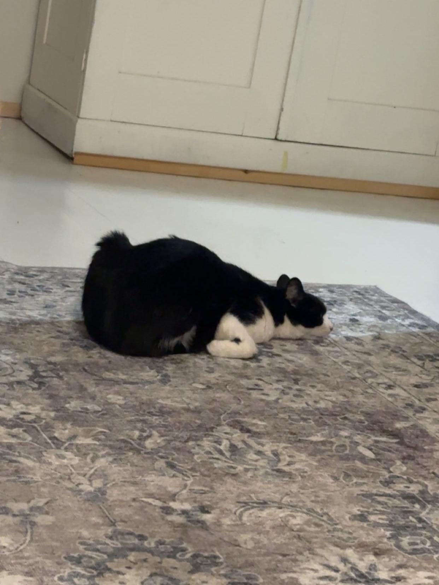
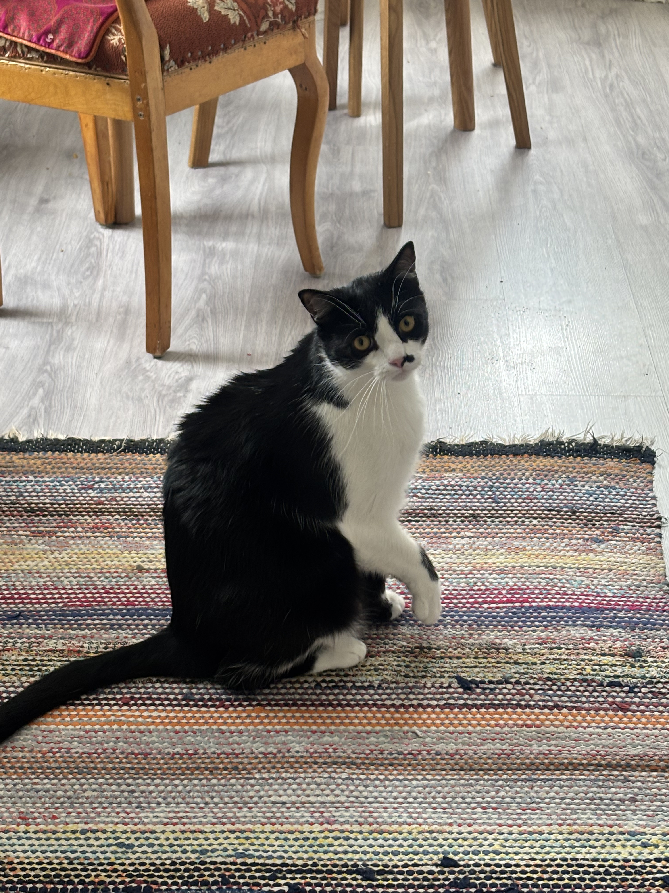
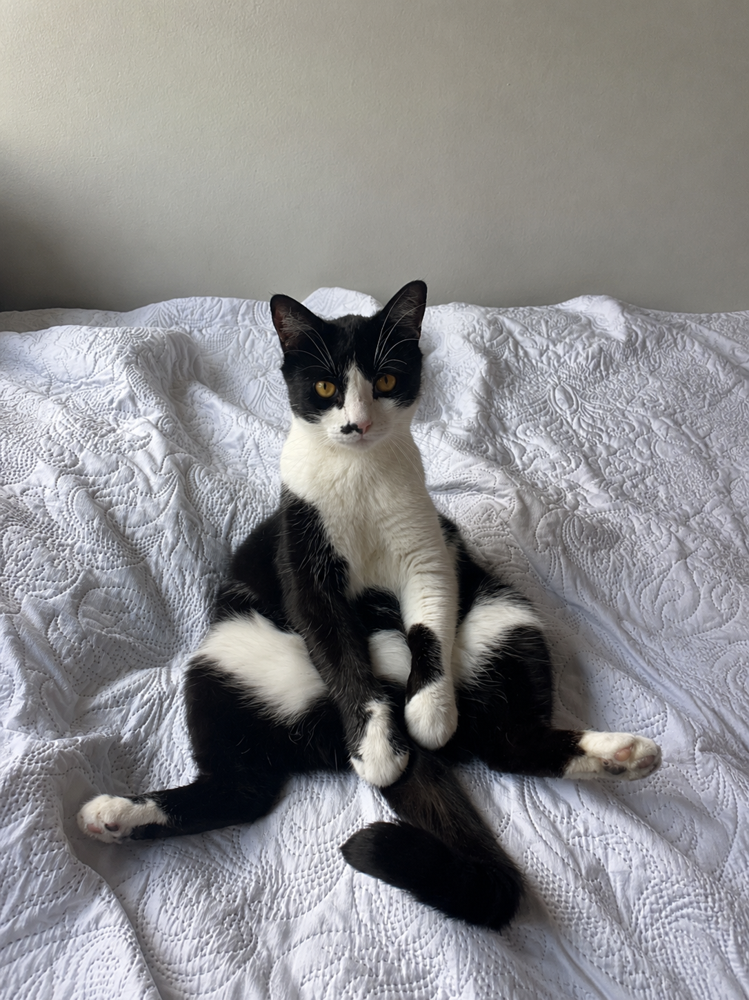
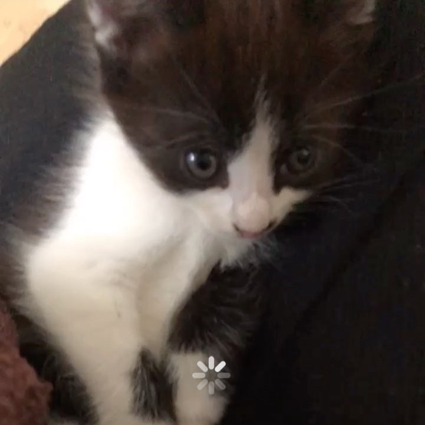
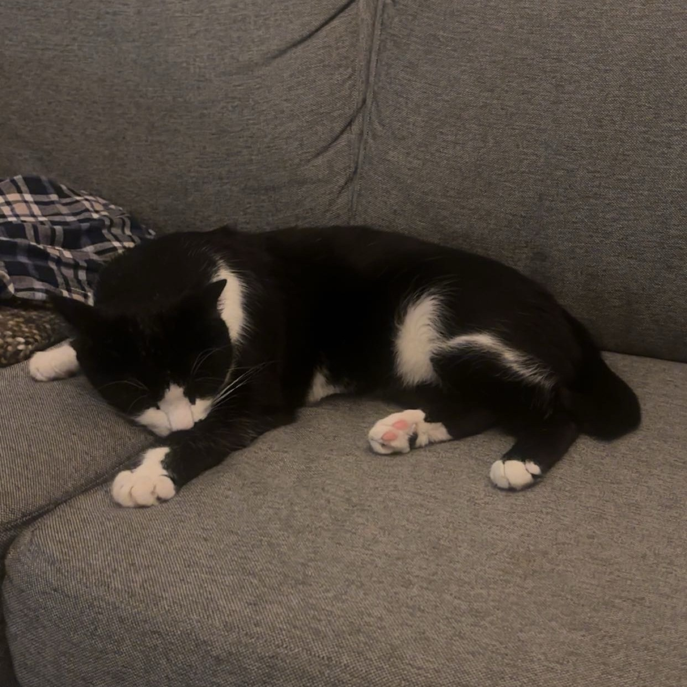

Päivät täynnä rutiineja, herkkuja ja vaarallisia vesimonstereita.

Töpö pitää rutiineista.
Päivä alkaa silloin kun omistaja herää. Aamupala pitää saada heti.
Muuten saattaa tulla pieni pohjehyökkäys. Mutta se on vain Töpön tapa toivottaa hyvää huomenta!

Kun omistaja lähtee kouluun, alkaa Töpön “työpäivä”.
Se koostuu pääasiassa nukkumisesta, venyttelystä ja ikkunasta tarkkailusta.
Se vaatii paljon energiaa olla niin söpö.

Töpö kuulee oven äänen jo kaukaa.
Heti paikalla: venytys, naukaisu ja “Rapsuja kiitos” -asento.
Sitten pyydetään omistajalta herkkuja.

“En luota tähän huoneeseen… mutta jonkun sitä pitää vartioida.” -Töpö

Vaikka Töpö on nykyään talon vartija, joskus se oli vain pieni uninen pallero.
Päivän päätteeksi on iltapalan, ja myöhemmin nukkumaanmenon aika.
Huomenna Töpö jatkaa taas tärkeää työtään.
Jos Töpö valtasi sinunkin sydämen, anna napista virtuaalisilitys 🐾
